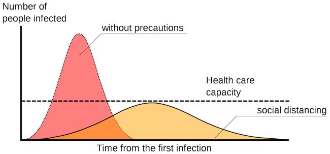
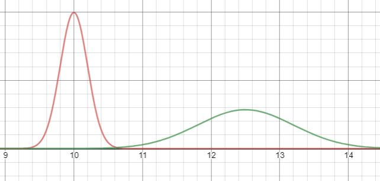

Flattening the Curve?
TOPICS: Epidemiology

In lieu of the coronavirus outbreak that is occuring at this time, and its spread in China, we encourage everybody to socially distance each other. This brings us to flattening the curve: but what is 'flattening the curve'?
To statisticians it may look like a normal distribution graph; to mathematicians it is a peculiar graph. The curve is the amount of patients diagnosed over a period of time. To flatten the curve means to lessen the amount of patients diagnosed over a period of time. Social distancing allows healthy people to avoid a community that has people that have the coronovirus (in this example), but perhaps may not exhibit symptoms; and for potentially sick people to stop contaminating others, thus lowering sickness rates.
This happened in the US, with the outbreak of the Spanish Flu. Philadelphia & St. Louis had people with the sickness, but reacted differently. In Philadelphia, city officials dismissed warnings from infectious disease experts, allowing a parade that gathered hundereds of thousands of people together, increasing the curve 'steepness'. St. Louis quickly implemented social isolation strategies, closing schools, limited travel, and encouraged personal hygiene & social distancing. They flattened the curve.
How is math related?
Using integrals, we can calculate that the red curve had a higher influx of patients in a period of time thant the blue curve. Keep in mind that we approximated the curves by using the normal distribution equation, then taking their integral, yielding a negative error function. We can interpret the integral is the no. of people infected, and the curve is the rate of infection. Take this for a grain of salt since the model is not perfect, but the flatter curve eases out hospitals to take care of patients, instead of bursting them with patients.
The growth of epidemics and pandemics like COVID-19 can resemble exponential functions. Epidemiology can use such models and modify it according to the mechanisms of the pandemic; and build a prediction chart - like the SIS, MSIR, and SEIR model.
Sources
LiveScience's article on the coronavirus